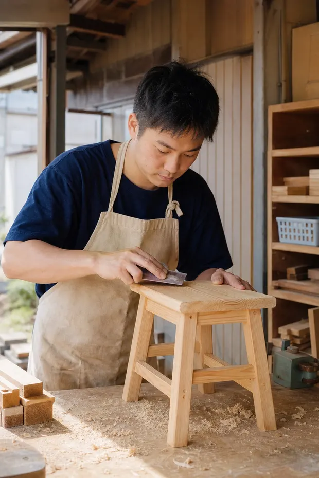
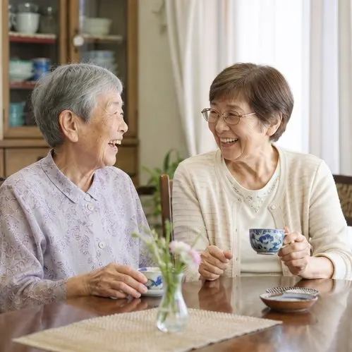

01
高齢の方の支援
34事業所年を重ねても、住み慣れた家と町で暮らし続けたい。その思いに合わせて、通う・泊まる・家に来てもらう・一緒に住むを組み合わせます。
こんなときに、ご相談ください
- ひとり暮らしの親が、最近あまり食事をとっていないようだ
- 介護保険のサービスを使いたいが、何から始めればいいか分からない
- 日中だけでも、誰かと過ごす時間をつくってあげたい
- 物忘れが増えて、家での暮らしに不安がある
おもなサービス
介護保険のサービスを使うには、要介護・要支援の認定が必要です。認定の申請から、ケアプランセンター みちしるべがお手伝いします。
02
障がいのある方の支援
21事業所働く、通う、暮らす。障がいのある方が「やってみたい」を形にできるよう、ひとりひとりの得意と体調に合わせて支えます。
こんなときに、ご相談ください
- 自分のペースで働ける場所を探している
- 特別支援学校を卒業したあとの、日中の通い先を考えたい
- 親元を離れて暮らす練習をしてみたい
- 家族の体調が心配で、この先の暮らし方を相談したい
おもなサービス
障害福祉サービスを使うには、お住まいの市町村での申請と、サービス等利用計画が必要です。手続きの順番からご説明します。

03
子ども・子育て支援
16事業所子どもを育てる時間を、ひとりで抱えなくていいように。親子で遊べる場所、ごはんを食べる場所、放課後に過ごす場所を町のあちこちに開いています。
こんなときに、ご相談ください
- 子どもと二人きりの毎日で、話し相手がほしい
- 仕事に復帰するので、0歳から預けられる園を探している
- 放課後、子どもが安心して過ごせる場所がほしい
- ごはんを誰かと一緒に食べる場所があると助かる
おもなサービス
保育園と放課後児童クラブの利用申し込みは、富士市の窓口を通して行います。子育てひろばとこども食堂は、申し込みなしで来ていただけます。
04
暮らしの立て直し支援
12事業所仕事をなくした、家賃が払えない、借金のことを誰にも言えない。暮らしがぐらついたときに、もう一度立て直すまでを一緒に歩きます。
こんなときに、ご相談ください
- 収入が減って、来月の家賃や光熱費が払えるか不安だ
- 仕事を探したいが、何年もブランクがある
- 家計がどうなっているのか、自分でも分からなくなっている
- 子どもの勉強を見てあげる余裕がない
おもなサービス
相談は無料で、秘密は守ります。ご本人でなく、家族や知り合いの方からのご相談でもかまいません。
05
地域の居場所づくり
9拠点用事がなくても寄れる場所が、町にあること。お茶を飲む、おしゃべりする、誰かの役に立つ。年齢も立場も関係なく集まれる居場所をつくっています。
こんなときに、ご相談ください
- 定年して、昼間に話す相手がいなくなった
- 引っ越してきたばかりで、近所に知り合いがいない
- 空いた時間に、地域の役に立つことをしてみたい
- 自治会で、集まりの場所をつくりたいと考えている
おもなサービス
茶の間とサロンは、予約なしでどなたでも来ていただけます。ボランティアのご希望は、お問い合わせフォームからお知らせください。
